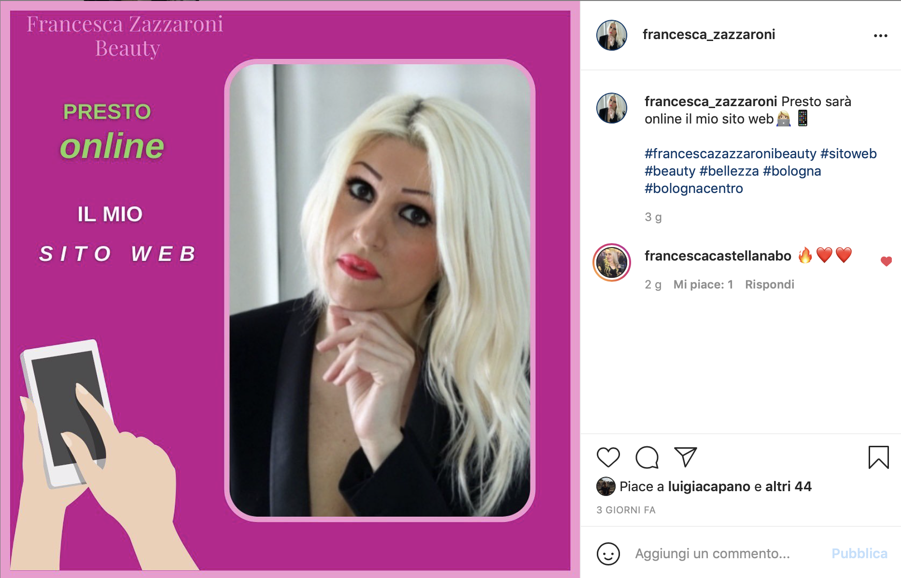
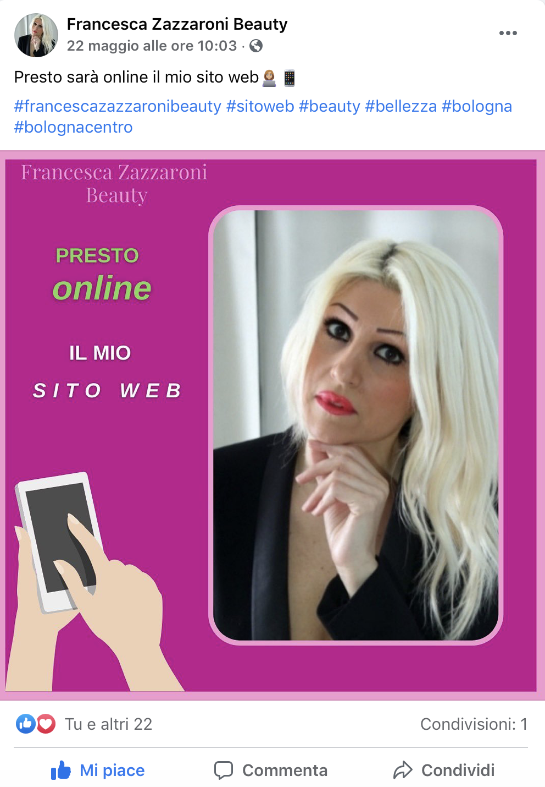

Questo sito web è stato creato con lo scopo di aiutare Francesca a promuovere la sua attività di estetista, make-up artist e consulente d'immagine a Bologna e farla emergere nel mondo del web. Il sito si rivolge ad un target prevalentemente femminile ed è stato realizzato utilizzando i linguaggi HTML e CSS. Il sito mira a rendere la navigazione dell' utente il più semplice e piacevole possibile aiutandolo a trovare immediatamente ciò di cui ha bisogno e collocando diverse Call To Action.
L'obiettivo di Francesca Zazzaroni Beauty è promuovere il centro estetico facendo conoscere Francesca, i trattamenti e le promozioni che offre.
Donne di età compresa tra i 20 e i 50 anni.
Ci sono diversi centri estetici in centro a Bologna, in questa documentazione si farà riferimento a Estetica Gloria, Liscissima e Vogue Estetica.
I colori principali del sito sono rosa (#C30890), bianco e grigio chiaro. La scelta di colori chiari ha l'obiettivo di comunicare un'idea di purezza e di pulizia (caratteristiche che un centro estetico deve trasmettere).
Per i titoli principali è stato utilizzato il font serif elegante e piacevole da vedere 'Playball', per gli altri titoli e per i paragrafi invece si è optato per un font sans serif più facilmente leggibile: 'Quicksand'.
L'immagine di background dell'header vuole far trasparire freschezza ed è presente in tutte le pagine per conferire coerenza al sito. Icone, immgini e testi sono disposti per rendere tutte le informazioni più chiare possibili. Appena entrati sulla homepage, infatti, viene subito chiarito chi è e cosa fa Francesca Zazzaroni Beauty grazie a 3 piccole descrizioni accompagnate da icone coerenti che hanno lo scopo di attirare lo sguardo dell'utente.
HTML e CSS
Adobe Color, Animate Css, Bootstrap, Canva, Font Awesome, GitHub, Google fonts, Google Analytics, Pexels.com, Photoshop, toolset.mrw.it.
Il sito vuole comunicare i contenuti in maniera facile e intuitiva, rendendo l'esperienza dell'utente il più piacevole e più semplice possibile. Anche per questa ragione si è deciso di utilizzare una CTA a Whatsapp, app di messaggistica che ormai tutti possiedono. Di seguito verrano analizzati i pro e i contro dei siti web dei competitors menzionati sopra.
Estetica Gloria non ha una CTA selezionabile, nel sito Francesca Zazzaroni Beauty sono state inserite diverse CTA selezionabili per agevolare il cliente nel prenotare un trattamento o una consulenza. E' tuttavia presente nell'homepage un bel carousel di immagini, assente invece nel sito di Francesca Zazzaroni Beauty per la volontà di mantenre uno stile abbastanza minimal e di non distrarre l'utente, infatti la maggior parte delle immagini si trovano nella sezione dei trattamenti.
I colori predominanti di Liscissima sono il bianco e il blu, il sito risulta elegante, ma poco aggiornato (l'ultimo aggiornamento risale al 3 Novembre 2021). I contenuti della homepage sono ben organizzati, ma la navigazione da desktop è poco intuitva in quanto le voci del menù sono nascoste in un menù ad hamburger in alto a sinistra, più approrpiato per una navigazione da mobile. Per quanto riguarda i contenuti sono appena accennati i trattamenti che offrono e non ci sono descrizioni.
Vogue Estetica ha come colori dominanti il marrone e il giallo, non li reputo adatti a far trasparire un'idea di pulizia e bellezza e il rosso utilizzato per i titoli è molto accesso e tende ad affaticare la vista. Il Carousel delle immagini è molto scuro e risulta parzialmente nascosto da scritte. Il sito è però ricco di contenuti: desctizioni di trattamenti, prodotti, prezzi e form.
In termini di comunicazione web il sito si prefigge i seguenti obiettivi:
1. Ottenere 20 "mi piace" ad un post di pubblicizzazione del sito sia su Instagram che su Facebook.
2. Raggiungere almeno 20 visite al sito dal momento della pubblicazione (Sabato 22 Maggio 2021) al 25 Maggio 2021.
3. Trasformare gli utenti in clienti ricevendo messaggi di prenotazione per la promozione del mese, o per altri trattamenti tramite Whatsapp.
Il target che si intende raggiungere è composto da donne di età compresa approssimativamente tra i 20 e i 50 anni che vivono o lavorano in centro a Bologna e che quindi possano recarsi da Francesca Zazzaroni Beauty anche durante una pausa pranzo.
Prima della creazione di un sito web i clienti venivano aggiornati prevalentemente attraverso Facebook e più recentemente attraverso la creazione di una pagina Instagram. Il messaggio che si vuole trasmettere attraverso il sito è quello di un'elevata professionalità e serietà.
1. Il primo obiettivo di comunicazione è stato raggiunto con successo: il post di promozione del sito ha superato abbondantemente i 20 "mi piace" su Instagram e raggiunto agevolmente i 20 su Facebook.
 2. Il secondo obiettivo di comunicazione è stato raggiunto: osservando i dati di Google Analytics il sito ha ottenuto 26 visite dalla data di pubblicazione al 25 maggio 2021.
3. Il terzo obettivo di comunicazione non è ancora stato raggiunto: i clienti che hanno richiesto la promozione del mese non lo hanno fatto tramite le Call To Action (messaggio Whatsapp) del sito.